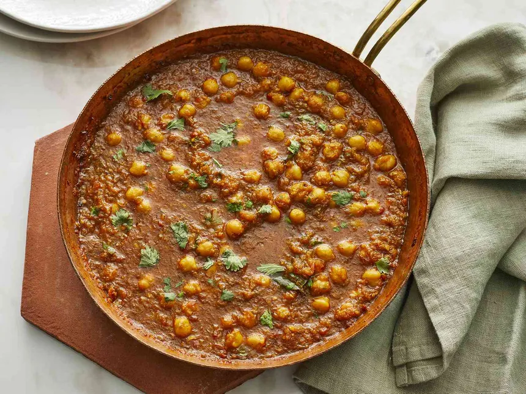
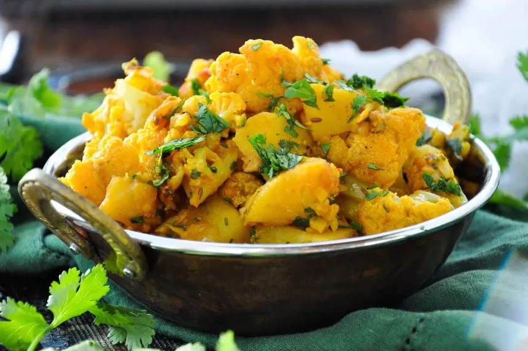
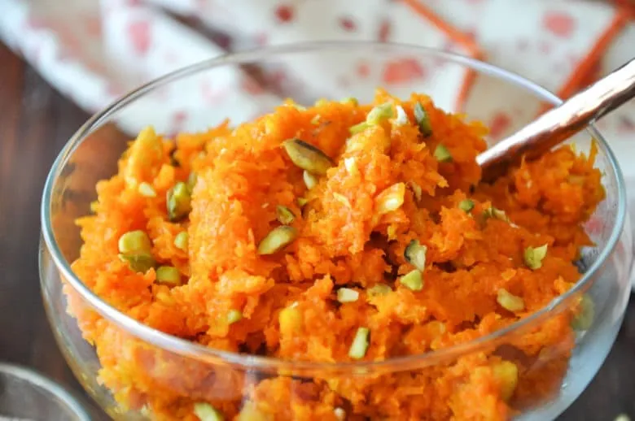

Discover the magic of Indian cuisine with our handpicked collection of authentic recipes. Whether
you're craving a spicy curry, a comforting dal, or a sweet treat, we've got you covered. From North to
South, East to West, each dish is a celebration of bold flavors, vibrant colors, and aromatic spices.
Popular Recipes
Chana Masala
A hearty, spicy chickpea curry simmered in a tangy tomato gravy with a blend of aromatic spices.
Aloo Gobi
A delicious combination of potatoes and cauliflower, stir-fried with spices and herbs.
Palak Paneer
Soft cubes of paneer (Indian cottage cheese) cooked in a rich, spiced spinach gravy.
Vegetable Biryani
Fragrant basmati rice layered with a colorful array of vegetables, cooked with saffron and spices.
Gajar Halwa
A sweet carrot pudding made with milk, sugar, and ghee, garnished with nuts and dried fruits.
Recipe 1.-
Chana Masala

Ingredients
1 cup dried chickpeas (or 1 can chickpeas)
2 tbsp oil
1 large onion (chopped)
2 tomatoes (chopped)
1 tsp cumin seeds
1 tbsp ginger-garlic paste
1 tsp ground turmeric, cumin powder, coriander powder, garam masala
1 tsp red chili powder
1 tsp amchur (or lemon juice)
Salt to taste
Fresh coriander for garnish
Steps
Cook Chickpeas (if using dried): Soak overnight, boil, and drain. Skip this step if using canned.
Sauté: Heat oil, add cumin seeds, then onions. Cook until golden. Add ginger-garlic paste.
Add Tomatoes & Spices: Add tomatoes, cook until soft. Add all spices and salt.
Combine: Add chickpeas and simmer for 10-15 minutes.
Finish: Stir in garam masala, amchur/lemon juice. Garnish with coriander.
Recipe 2.-
Aloo Gobi

Ingredients
2 medium potatoes (cubed)
1 small cauliflower (cut into florets)
2 tbsp oil
1 large onion (chopped)
2 tomatoes (chopped)
1 tsp cumin seeds
1 tbsp ginger-garlic paste
1 tsp turmeric, cumin powder, coriander powder, garam masala
1 tsp red chili powder
Salt to taste
Fresh coriander for garnish
Steps
Sauté Potatoes & Cauliflower: Heat oil, add cumin seeds, then potatoes and cauliflower. Cook until
lightly golden.
Cook Onion & Spices: Add onions, sauté until golden. Stir in ginger-garlic paste, then add tomatoes
and spices. Cook until soft.
Combine & Simmer: Mix in the potatoes and cauliflower. Cover and cook for 10-15 minutes, stirring
occasionally.
Finish: Stir in garam masala, adjust seasoning, and garnish with fresh coriander.
Sauté Paneer: Lightly fry paneer cubes until golden, set aside.
Cook Spices: Heat oil, add cumin seeds, then onions. Sauté until golden. Add ginger-garlic paste,
tomatoes, and spices. Cook until soft.
Add Spinach: Stir in spinach puree, simmer for 5-7 minutes.
Combine: Add paneer and garam masala. Cook for another 2-3 minutes.
Finish: Optional – add a drizzle of cream and serve with naan or rice.
Recipe 4.-
Vegetable Biryani
Ingredients
1 cup basmati rice (soaked)
1 cup mixed vegetables (carrot, peas, beans, potato)
2 tbsp oil or ghee
1 onion (sliced)
2 tomatoes (chopped)
1 tbsp ginger-garlic paste
1 tsp cumin seeds
1 bay leaf, 2-3 cloves, 2-3 cardamom pods, 1 cinnamon stick
1 tsp turmeric, cumin powder, coriander powder, garam masala
Salt to taste
Fresh coriander & mint for garnish
Steps
Cook Rice: Boil rice until 70% done, drain, and set aside.
Sauté Vegetables: Heat oil, add whole spices, then onions. Cook until golden. Add ginger-garlic
paste, tomatoes, and powdered spices. Cook for a few minutes.
Add Vegetables: Add mixed veggies and cook until tender.
Layer Biryani: In a pot, layer half the rice, add the vegetable mixture, then top with remaining
rice. Garnish with coriander and mint.
Steam: Cover and cook on low heat (dum) for 10-15 minutes. Serve with raita.
Recipe 5.-
Gajar Halwa

Ingredients
4 cups grated carrots
2 cups milk
1 cup sugar
3 tbsp ghee
½ cup condensed milk (optional)
¼ cup chopped nuts (almonds, cashews)
1 tsp cardamom powder
Steps
Cook Carrots: Heat ghee in a pan, add grated carrots. Sauté for 5-7 minutes until soft.
Add Milk: Pour in milk and cook until carrots absorb the milk (about 15-20 minutes), stirring
frequently.
Sweeten: Add sugar and condensed milk (if using), cook until the halwa thickens and ghee starts
separating.
Finish: Stir in cardamom powder and nuts. Serve warm, garnished with more nuts.
IF you also want to include your own recipe, you can do so by adding a new recipe with the following
contact: XXXXXXXXXX